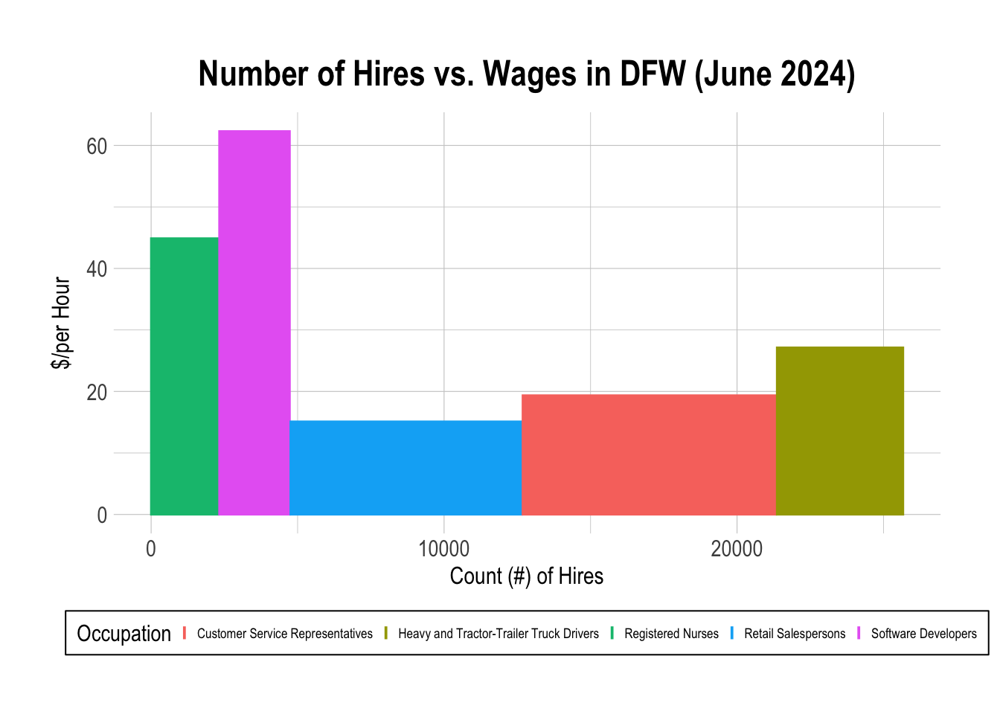
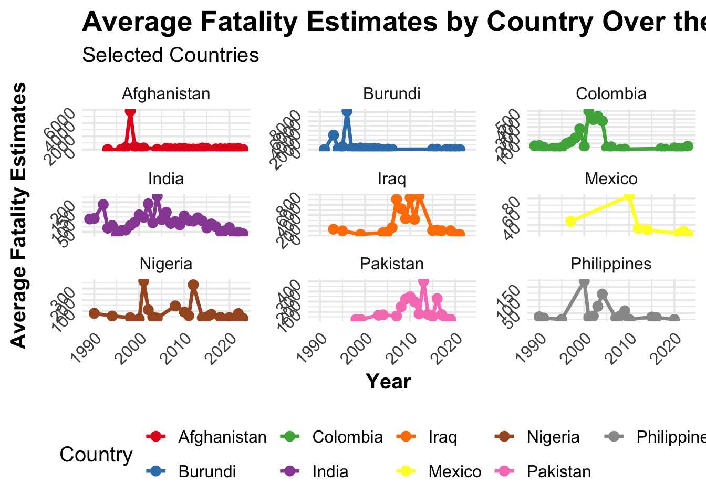
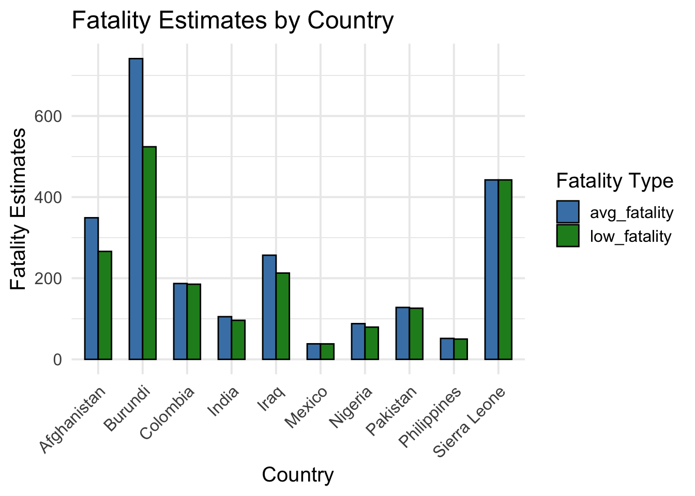
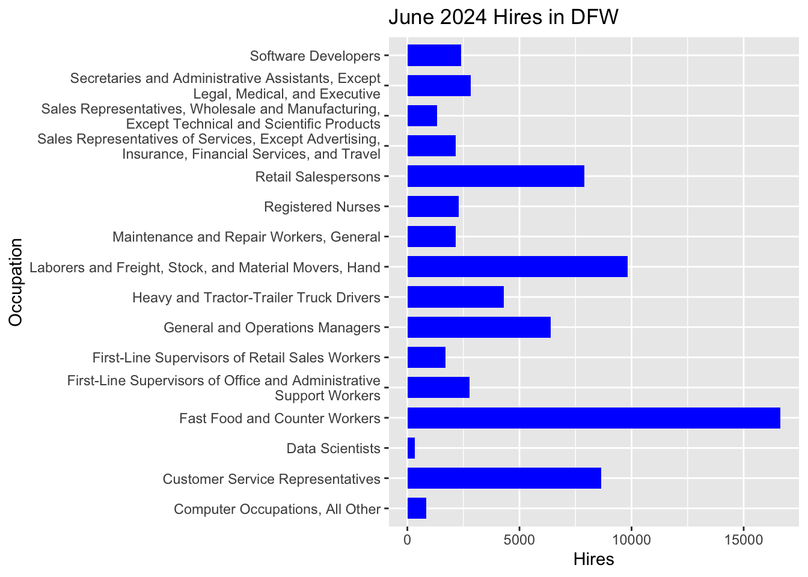

# Load in libraries
# Be sure they are installed first
library(tidyverse)
library(hrbrthemes)
library(gt)
library(ggplot2)
library(dplyr)
library(tidyr)
library(hrbrthemes)
library(scales)Assignment Four
More Graphics
Ever wanted to know how to make a variable width column chart, a table with embedded charts, a bar chart, or a column chart in R? Well, look no further than below! Just follow these codes and you too can graphically represent your data in a stunning variety of ways.
We will start off loading in some libraries:
If you have some categories with different amounts of observations for each of them, and need to plot two variables per category, you can make a variable width column chart:
# Read in occupational data-set:
data2 <- read.csv("occs.csv")
data3 <- data2[-c(6:16), ] # Pare down the data to make it managable
# Change variables:
attach(data3)
Occupation <- as.factor(Occupation)
SOC <- as.factor(SOC)
# Cumsum the change bar widths
data3$right <- cumsum(data3$Hires) + 30*c(0:(nrow(data3)-1))
data3$left <- data3$right - data3$Hires
# Make actual var-width barplot:
ggplot(data3, aes(ymin = 0)) +
geom_rect(aes(xmin = left, xmax = right, ymax = Earnings, colour = Occupation, fill = Occupation)) +
xlab("Count (#) of Hires") +
ylab("$/per Hour") +
ggtitle("Number of Hires vs. Wages in DFW (June 2024)") +
theme_ipsum() +
theme(legend.position="bottom",
legend.text=element_text(size=7),
axis.title.x = element_text(size = 12, hjust = 0.5),
axis.title.y = element_text(size = 12, hjust = 0.5, vjust = 2.5),
plot.title = element_text(hjust = 0.5),
legend.background = element_blank(),
legend.key.size = unit(0.000000000004, 'cm'),
legend.key.height = unit(0.00006, 'cm'),
legend.key.width = unit(0.00006, 'cm'),
legend.box.background = element_rect(colour = "black"))
Wow, Nice! Ever wanted to plot a bunch of graphics in a single table? Here is how you can:
# Load a new dataset
data <- read.csv("oneside.csv")
# List countries
selected_countries <- c("India", "Pakistan", "Afghanistan", "Nigeria",
"Yemen", "Iraq", "Burundi", "Sierra Leonne", "Colombia",
"Philippines", "Mexico")
# Table w/ embedded charts:
# Filter data
filtered_data <- data %>%
filter(location %in% selected_countries)
# Summ. fatality
summary_data <- filtered_data %>%
group_by(location, year) %>%
summarise(
avg_fatality = mean(best_fatality_estimate, na.rm = TRUE)
) %>%
pivot_longer(cols = avg_fatality,
names_to = "fatality_type",
values_to = "fatality")
# Combine plots
ggplot(summary_data, aes(x = year, y = fatality, color = location, group = location)) +
geom_line(size = 1.2) +
geom_point(size = 3) +
labs(title = "Average Fatality Estimates by Country Over the Years",
subtitle = "Selected Countries",
x = "Year",
y = "Average Fatality Estimates",
color = "Country") +
theme_minimal(base_size = 15) +
scale_color_brewer(palette = "Set1") + # Use a distinct color palette
theme(
legend.position = "bottom",
plot.title = element_text(face = "bold", size = 20),
plot.subtitle = element_text(size = 15),
axis.title = element_text(face = "bold"),
axis.text = element_text(size = 12, angle = 45, hjust = 1)
) +
facet_wrap(~ location, scales = "free_y") # Separate plots for each country with free y-scales
Now if you have a lot of items to compare, you can make a column chart:
# reload international dataset as new df
mydata <- read.csv("oneside.csv")
# List new countries
selected_countries <- c("India", "Pakistan", "Afghanistan", "Nigeria",
"Yemen", "Iraq", "Burundi", "Sierra Leone",
"Colombia", "Philippines", "Mexico")
# Filter
filtered_data <- mydata %>%
filter(location %in% selected_countries)
# Summarize
summary_data <- filtered_data %>%
group_by(location) %>%
summarise(
avg_fatality = mean(best_fatality_estimate, na.rm = TRUE),
low_fatality = mean(low_fatality_estimate, na.rm = TRUE)
) %>%
pivot_longer(cols = c(avg_fatality, low_fatality),
names_to = "fatality_type",
values_to = "fatality")
# Make chart
ggplot(summary_data, aes(x = location)) +
geom_bar(aes(y = fatality, fill = fatality_type),
position = position_dodge(width = 0.6), # Adjust width for overlap
stat = "identity", width = 0.6, color = "black") + # Set bar width
labs(title = "Fatality Estimates by Country",
x = "Country",
y = "Fatality Estimates",
fill = "Fatality Type") +
theme_minimal(base_size = 15) +
scale_fill_manual(values = c("avg_fatality" = "steelblue",
"low_fatality" = "forestgreen")) +
theme(axis.text.x = element_text(angle = 45, hjust = 1)) # Slant x-axis labels
And here is a way to make good old fashioned bar charts:
hh <- ggplot(data2) +
ggtitle("June 2024 Hires in DFW") +
geom_col(aes(Occupation, Hires), fill='blue', width=0.7) +
scale_x_discrete(labels = function(x) str_wrap(x, width = 55)) +
coord_flip()
hh
There is practically no limit to what one can graph in R.